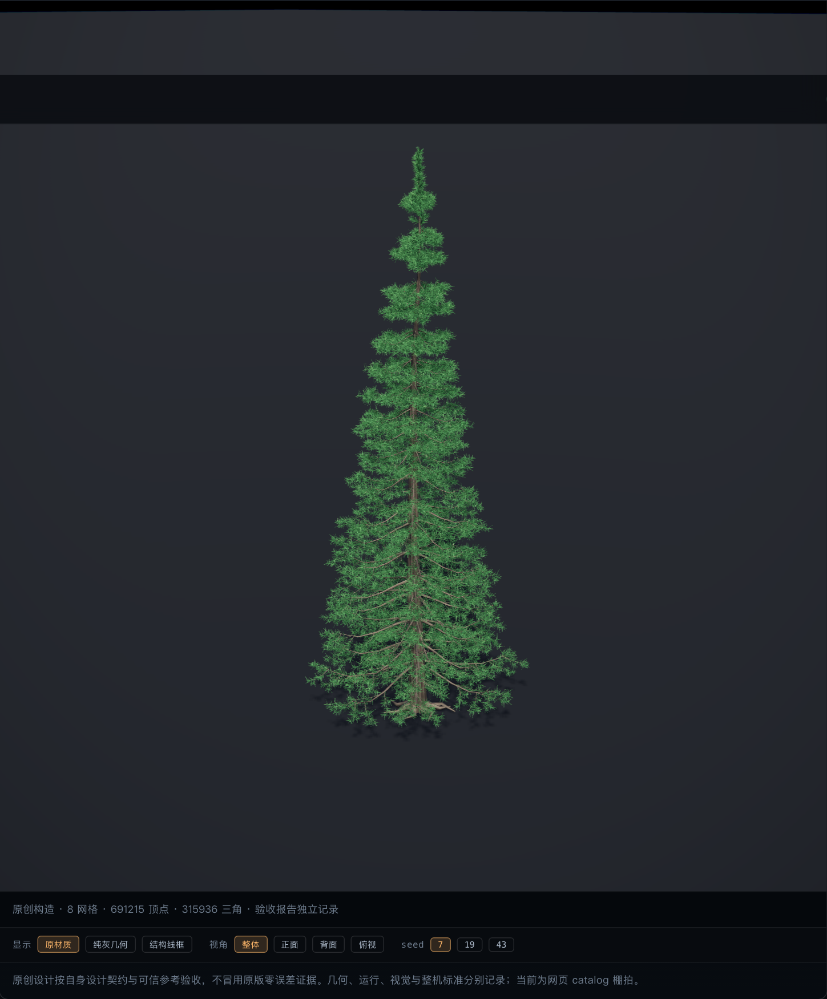
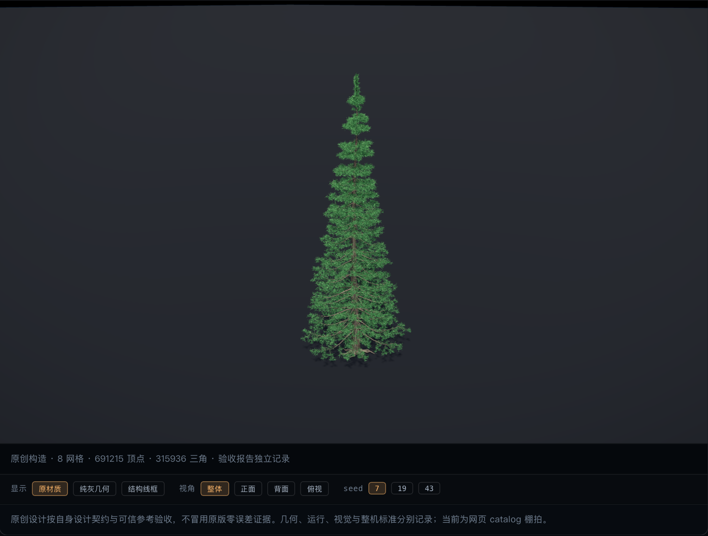
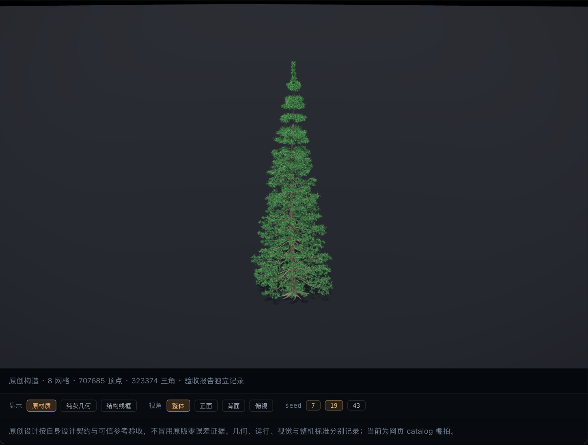
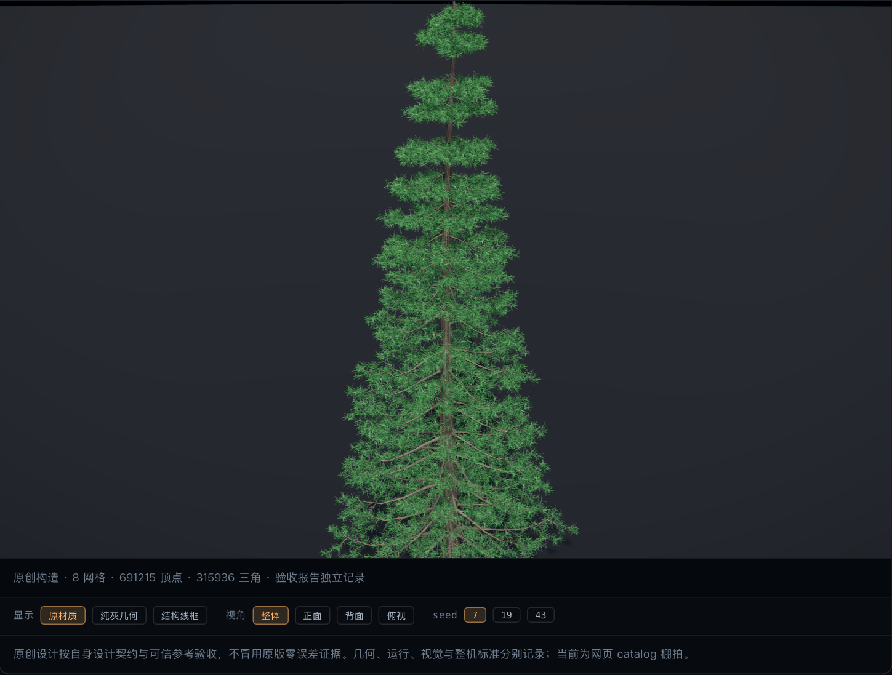
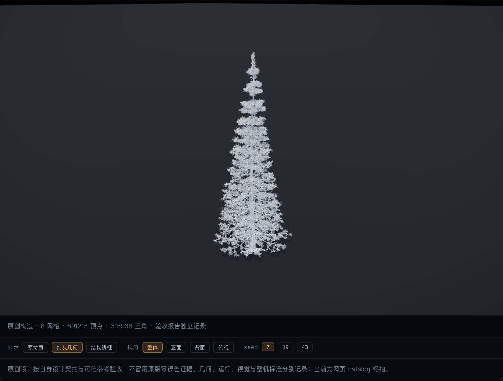
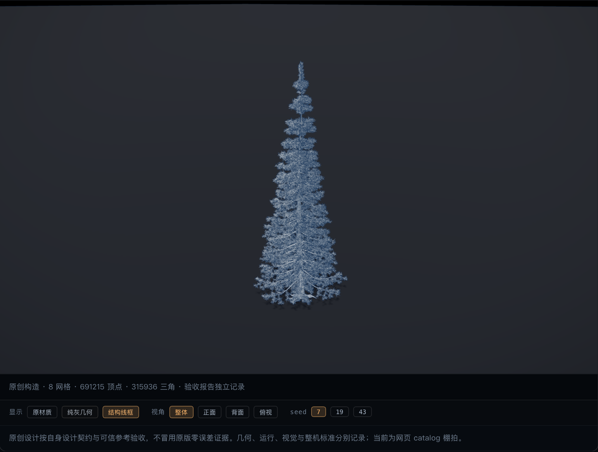
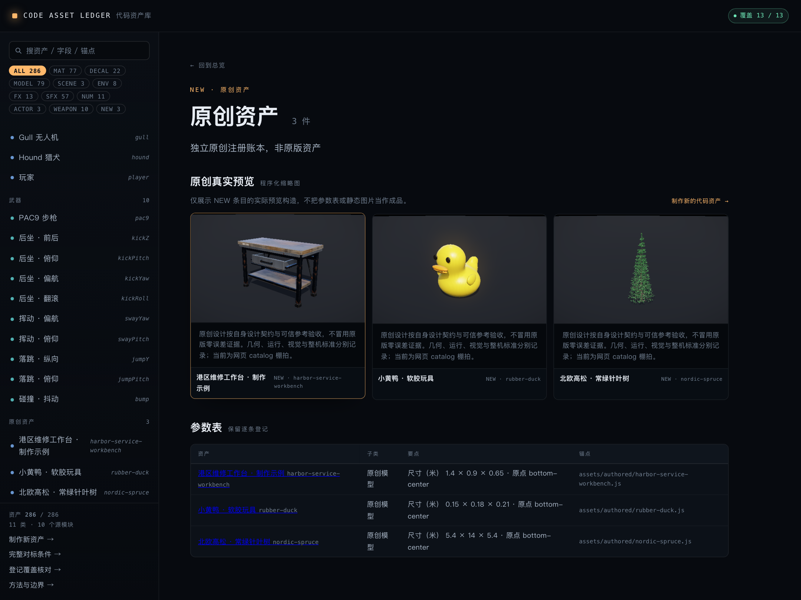

CODE ASSET LEDGER / ORIGINAL BOTANICAL ASSET
北欧高松 · 常绿针叶树
高耸、修长、层叠下垂的云杉式树冠。按“北欧很高的松树”这一外形需求制作，不是盆栽，也不是覆霜雾凇。绿色针叶、灰棕树干，纯代码构建，不依赖外部模型或图片。
14 m树高 · 冠幅约 5.4 m
94,162默认版本几何针叶
8 / 2网格 / 材质
3 种seed 7 / 19 / 43 分枝形态

每一层都是实际结构
- 渐细树干、纵向树皮沟脊及不对称根爪。
- 20 层错落主枝，向外伸展、下垂并略翘梢。
- 默认 123 根主枝、984 根次枝、3,960 根末级小枝。
- 针叶沿真实枝轴生长，内侧深绿、外梢浅绿；不使用整块实心锥体或照片剪影。
- 树冠保留透空与层间错落，三个种子实际改变枝条和叶簇分布。
- 树干/根颈有三段粗碰撞；针叶不作为阻挡角色的实心体。
正式入库位置
首页“原创资产 / 最近制作”、NEW 分类和搜索“北欧”均可定位。详情中有模型、seed 选项、源码、契约和此检查页。
当前为近景静态展示资产，默认 315,936 三角、691,215 顶点。未做远景 LOD、风摆、积雪或森林实例化；不以单树可运行宣称批量森林性能已完成。
实际预览与变体






检查结果与边界
结构检查通过
- 网页同版本 r160 本地引擎逐 TypedArray 检查全部位置、法线、UV、顶点色与索引。
- 三个 seed 的尺寸、必要部件、碰撞八角包络和挂点有效；零退化三角。
- 同 seed 两次重建增量 SHA256 一致，不同 seed 摘要不同。
- 每次 dispose 释放 8 组自有几何与 2 材质，重复调用无新增释放事件。
- 网页三视图、灰模、线框、seed 控件、三轮重新挂载、首页分类搜索及局域网检查完成；390 宽横向溢出为 0。
如实保留未完成项
通用检查脚本在大型几何的浏览器全量数据处理/导航阶段中断，原失败报告保留；没有把它改写成 PASS。本轮使用低内存逐数组检查替代几何环节，并单独运行浏览器交互与图片测试，报告分开保存。
截图过程中记录到 GPU ReadPixels 同步警告；没有页面异常，但这不是性能测试通过证据。完整显存/内存趋势、移动设备帧率、大规模森林、精确植物学物种与 r180 整机集成均未认证。
已实际查看整树、树冠、灰模、线框和变体截图；按本次外形目标可交付，原创视觉结论另存补充记录，不自动修改 registry 的 unverified。